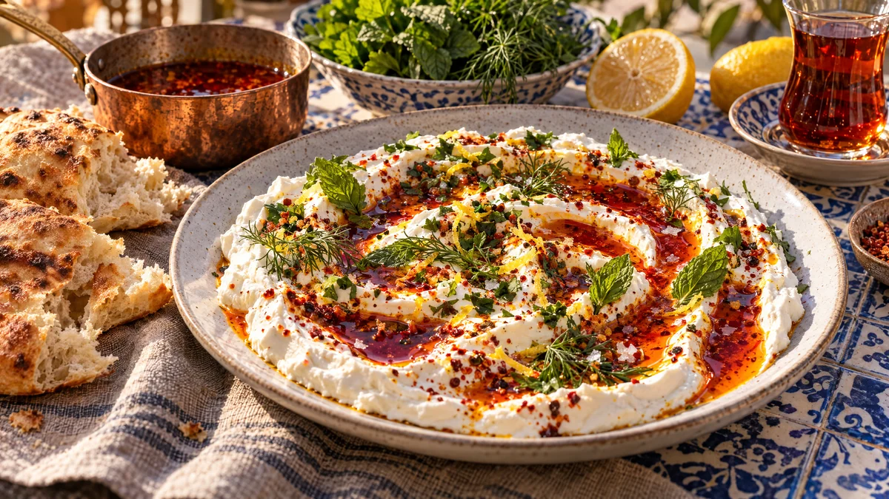

RESTFEST · RECEPTSåser & röror
Hemmagjord labneh med paprikasmör och örter
En burk turkisk yoghurt silas över natten och blir en krämig, syrlig färskost. Den bres ut i virvlar och toppas med glödande rött paprikasmör, flingsalt och färska örter. Ser ut som en meze från Istanbul.
- Förberedelse
- 10 min + 12–24 tim silning
- Tillagning
- 5 min
- Portioner
- 6–8 som dipp (ca 5 dl)
- Nivå
- Nybörjare
 Det här behöver du
Det här behöver du
Tryck på + vid det du behöver köpa.
Labneh
Paprikasmör
Till servering
Gör så här
- Rör ner saltet i yoghurten.
- Klä en sil med en dubbelvikt ostduk, en ren kökshandduk eller två kaffefilter. Ställ silen över en skål.
- Häll yoghurten i silen och vik tyget över. Ställ i kylen i 12–24 timmar. Efter 12 timmar är labnehen krämig som en dipp, efter 24 timmar fast och bredbar.
- Häll bort vätskan i skålen, eller spara den till bröd- eller pannkakssmet. Rör labnehen slät och blanda i den rivna vitlöken.
- Gör paprikasmöret precis före servering. Smält smöret i en liten kastrull på låg värme och ta den från värmen.
- Rör ner paprikapulver och chiliflakes och låt dra i 1 minut. Paprikapulver bränns lätt, så låt inte kastrullen stå kvar på plattan.
Dekoration och servering
- Bred ut labnehen på ett flatt fat i stora virvlar med baksidan av en sked.
- Häll det varma paprikasmöret i groparna, så att det rinner ut som glödande röda strimmor mot det vita.
- Strö över örter, citronskal och flingsalt.
- Servera direkt med varmt bröd och grönsaksstavar.
- Rulla överbliven fast labneh till små bollar och lägg dem i olivolja med örter i en burk. De håller i ca 1 vecka i kylen.
Mått och ugnstemperaturer
Måtten är svenska (dl, msk, tsk, krm). Ugnstemperaturerna gäller vanlig ugn med över- och undervärme; med varmluft, sänk med 20 grader.